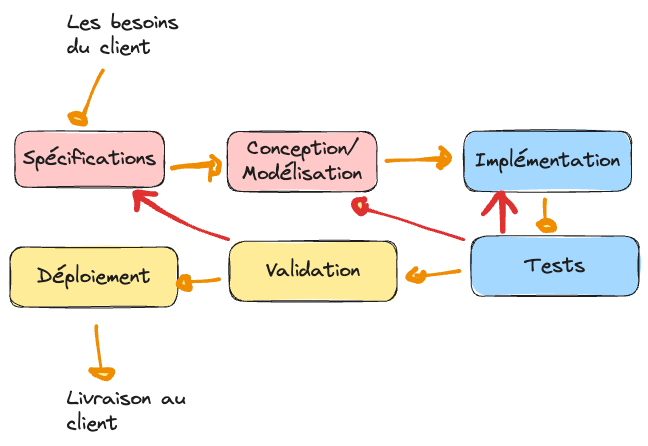

Chapitre 2 : Cycle de vie d’un logiciel
Une méthode est un processus étape par étape qui décrit comment atteindre un objectif. Le SDLC est une méthode pour développer un logiciel. Tout développement passe par les mêmes grandes phases ; ce sont les méthodologies (Partie 2) qui vont organiser ces phases selon les contraintes du projet.
Objectifs
À la fin de ce chapitre, vous devez pouvoir :
Énumérer et expliquer les phases standard du cycle de vie d’un logiciel
Distinguer les différents niveaux de test (unitaire, intégration, validation)
Comprendre que toutes les méthodologies réorganisent ces mêmes phases
Les phases standard
Tout développement de logiciel passe par les phases suivantes :
Spécification — identifier les besoins / spécifications fonctionnelles (ce que le système doit faire) et non fonctionnelles (performance, sécurité, ergonomie, …).
Conception / modélisation — la conception générale (l’architecture logicielle) puis la conception détaillée (diagrammes spécifiques, UML…).
Développement — écrire le code de l’outil.
Tests — vérifier l’outil à plusieurs niveaux :
Tests unitaires : chaque fonction est testée isolément ;
Tests d’intégration : l’usage combiné des fonctions pour réaliser un cas d’utilisation ;
Tests de validation : l’ensemble de l’interface et des fonctionnalités.
Validation avec le client — s’entendre avec le client sur l’outil réalisé : utilisateurs réels, beta testing, tests d’IHM.
Déploiement et livraison — mettre en production et livrer.
{kind=link}

Le schéma standard repris par toutes les méthodologies.
À retenir
Les méthodologies de la Partie 2 ne changent pas ces phases : elles changent l’ordre, le découpage et la fréquence avec lesquels on les parcourt (une seule fois en séquence, par itérations, avec gestion des risques, etc.).
Les niveaux de test
Niveau |
Ce qu’on vérifie |
|---|---|
Unitaire |
Chaque fonction / unité de code prise isolément |
Intégration |
La collaboration de plusieurs fonctions pour réaliser un cas d’utilisation |
Validation |
L’ensemble du logiciel (interface + fonctionnalités) face aux besoins |
Exercices
Note
À faire avant la prochaine séance.
Pour chacune des 6 phases, donnez en une phrase ce qui en constitue le livrable principal.
Donnez un exemple concret de test unitaire, d’intégration et de validation pour une application de connexion (login).
Pourquoi dit-on que « toutes les méthodologies reprennent ces mêmes phases » ? Que change réellement une méthodologie ?